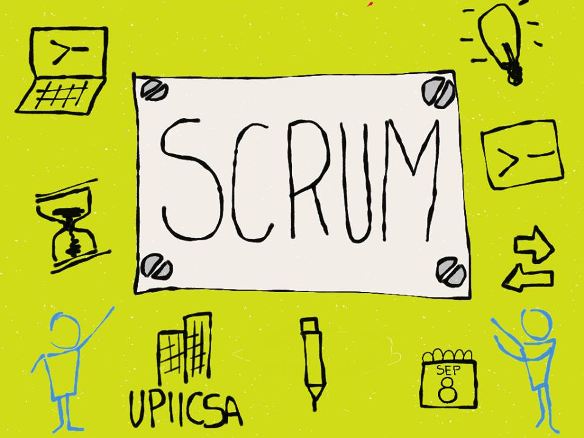
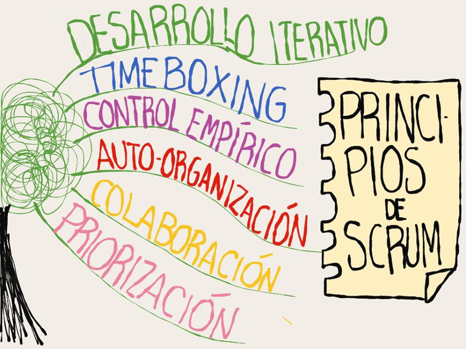
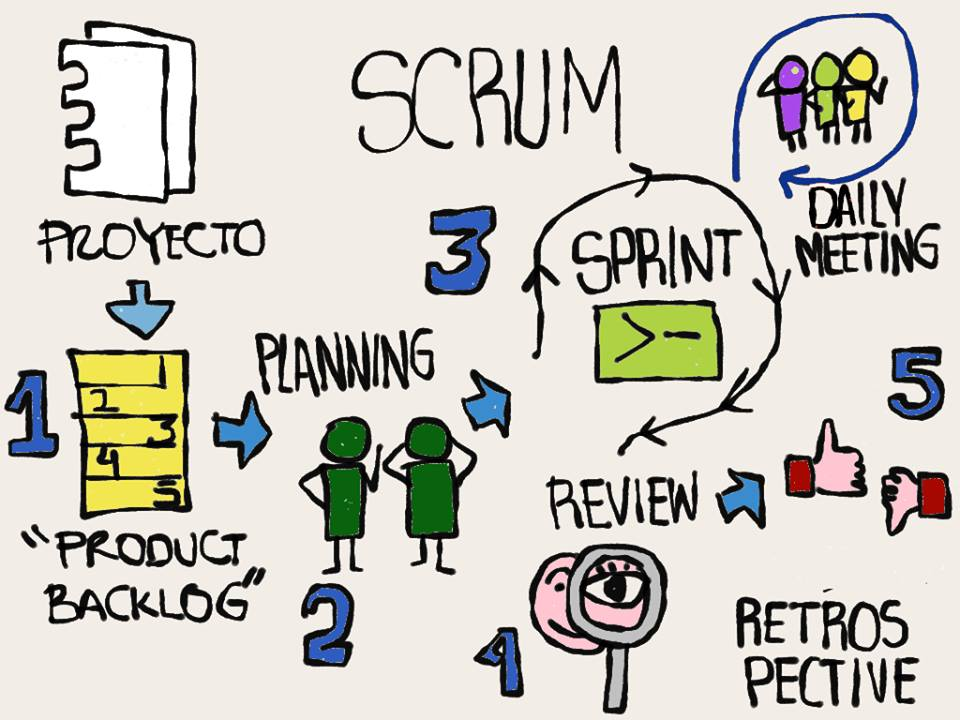
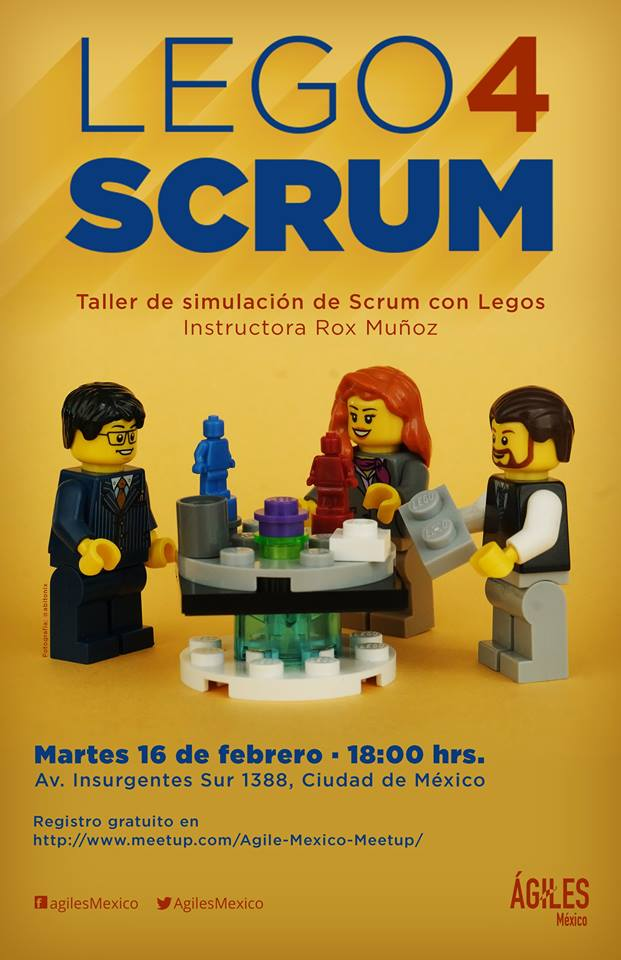

Workshop de Scrum
@carlogilmar.
Workshop de Scrum
Por Carlo Gilmar Padilla Santana
Abril, 2017
Objetivo del Workshop
Conocer el framework de SCRUM y sus valores fundamentales mediante dinámicas y ejercicios.
Valores del Manifiesto Ágil
Individuos e interacciones sobre procesos y herramientas
Software funcionando sobre documentación extensiva
Colaboración con el cliente sobre negociación contractual
Respuesta ante el cambio sobre seguir un plan
Esto es, aunque valoramos los elementos de la derecha, valoramos más los de la izquierda.

¡Vamos a jugar!


¿Dónde aprender más?
Scrum Study Site http://www.scrumstudy.com/SBOKGuide
Becoming Agile, Greg Smith & Ahmed Sidky
Agile!: The Good, the Hype and the Ugly, Bertrand Meyer

Preguntas y dudas
Fork me on GitHub